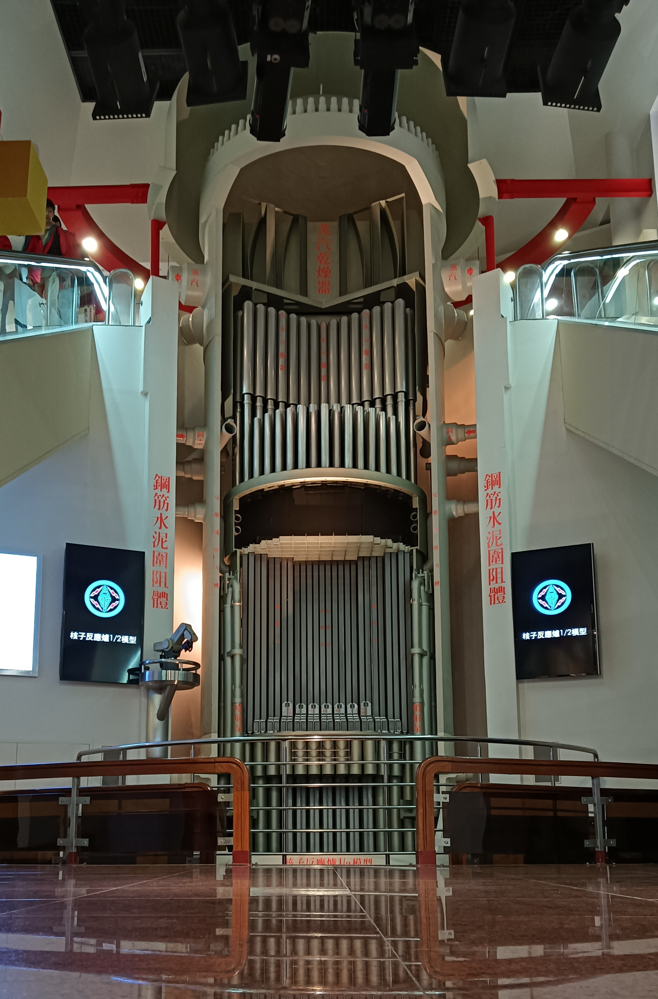
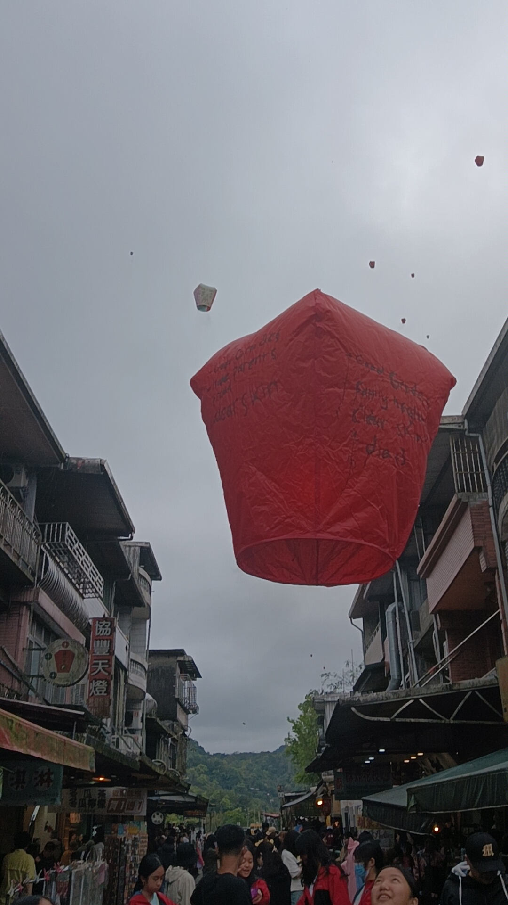

Taipei : A City of Diverse Wonders
Tugas English RW
Have you ever wanted to experience everything a country offers? Taipei is a diverse city. Located in Taiwan,
it appreciates the advance of technology as well as preserving culture and
nature. Here there are many things to explore,
and it's very unlikely you'll get bored. See the sights and admire the beauty of nature's creations at Yehliu Geopark.
Learn about the technology behind nuclear power plants or even make your wishes come true by flying a lantern.
Whether you're here for travel or study, Taipei has everything you need.
A Tamed Monster
If you are here to study, Kuosheng Nuclear Power Plant
is one of the best places to visit. Taipei and Taiwan as a whole have been
revolutionizing sustainable energy sources for
many years.
They used to have 3 active nuclear power plants, but today only
one of them is of current use. Unfortunately, when me and my
study tour group visited, it was raining like a pouring jug, so
we sheltered inside the power plant's museum.
Inside we learned about the history of sustainable energy,
marveled at how energy is generated from nuclear power, and even
got to engage in virtual hands-on activities. While in the past a destructive
power used in bombs, today nuclear energy has found a new
place in keeping the environment sustainable.
|
|
 |
Rocks Worth A Million Stories
Yehliu Geopark is only a 40 minute drive away from the nuclear power plant.
I suggest that a day plan centered primarily around these 2 destinations
is most effective. When we arrived there, the natural forces of
wind and rain striked again as they have been for billions of years.
The same two forces are what shaped Yehliu Geopark
to be how it is today. Yehliu Geopark is
considered one of Taiwan's natural gems. The natural beauty of
its preserved rock formations are a spectacle
no human can replicate. Its large area spans so far and wide
such as the deep blue sea around it that it would
take months to explore every nook and cranny.
The majesty of the renowned Queen's Head is sure to
strike awe to anyone who sees it, and the
dainty Fairy's shoe is also a remarkable formation that
seemingly only magic could create. My favorite formation
is the Mushroom Rocks. Closest to the ocean,
they were the most attacked by the howling of the winds,
and the anger of the waves. What survived is
a coordinated series of rocks with larger
"headcaps" than "stalks" very similar to a typical mushroom.
If you are ever lucky enough to visit here
without the need of a raincoat, make sure you
take lots of photos.
| |
 |
Old Streets and Lanterns
If you needed to pick from cultural heritage or amazing
experiences which one would you choose? Well what
if you can have both? Jiufen Old Street and Shifen Lantern flying
are both two cultural heritage centers
where you can have many amazing experiences.
A treacherous hike of 300 slippery stairs leads you
to Jiufen Old Street. A paradise in every which way,
this once thriving gold mine now serves as a place where
food lovers, cultural enthusiasts and social media influencers
can enjoy alike. See the sights of the hills this street
was built on as you wander through the narrow alleyways to
find cultural treasures. Make your way to Shifen,
once a coal mine now a popular tourist destination.
Write your wishes on a lantern and send them up
to the sky like a hot air balloon. Marvel at the
beautiful sight of lanterns floating like jellyfish
and make way to one of the many souvenir stores
to seal this moment in memory.
| |
 |
Where Nature and Nurture Coincide
Natural beauty, cultural heritage, and revolutionary technology
can all be found in Taipei. The heart of Taiwan, Taipei is
a beautiful city. Whatever you are here for, this city has it all